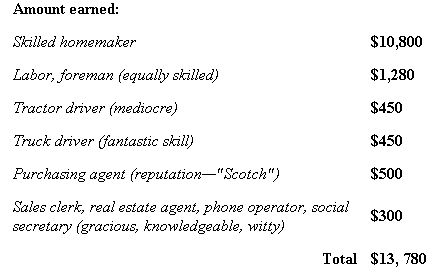

LAST LAUGH
No Deficit At Home
"Hey make up a list of what you earned last year," hollers my husband from the next room, where he's wind ing up his six weeks' dalliance with income tax forms. Well, let's see. What did I earn last year? A skilled homemaker should be worth at least $3 an hour, and she invests about 12 hours a day. Of course, I wasn't here every day and Sundays were light. Say 300 days at $36 a day. That's $10,800 to start with. And then a farmer's wife has "hired man" tasks to lengthen most of her days. I went to work with my thinker and my eigth-grade math and I drew up my list.
I laid it on the bookkeeper's desk and left. In a calculated few moments, there was a roar. "That's not what I wanted!"
"But you asked me what I earned. I thought my estimate was conservative, considering my education and experience."
"Would you please make me up a list of what you actually got," he said in exasperation.
"Ohhh...what I actually got ...Well, that's something else..."
Much later I slipped in and laid my second list on his desk:
Payment Received for Services Rendered:
Sunrise over the valley about 300 times (No failure with the sun. I was absent a few times)
Sunset over Scmaltz's barn
A picture frame of barn siding
Picnics in the pasture
Two dogs working a woodchuck hole
Rain coming across the potatoes in August
New peas on counter, June 10
Sweet corn on counter, July 10
New potatoes on counter, August 10
A banana cream pie (from scratch) from a son on Sunday morning
Swamp buttercups in May
Rural free delivery
An oriole in the pear tree
Hot buttered rum by a hearthfire in a blizzard
A wrought-iron kettle restored by a son
Lunch alone with my honey on weekdays
Sons coming into supper from working with their father
A golden ginkgo tree in October
Little kids in leaf piles
Impromptu visits with neighbors
A chipmunk on the back steps
One perfect coal bin full of wood, coal and a neat stack of kindling (Beautiful!!)
Walking down the road on a starry night
Bare branches against the moon on a winter sky
Wheat emerging under snow
More love, support, concrete assistance, and encouragement than I deserve
Total value: Incalculable
And to it I affixed the following note:
I found it impossible to assign a value to these things, and I suppose it's just as well. If the IRS figures a way to tax our real wealth, we'll be bankrupt. No matter how you slice it, "Payment Received" exceeds "Amount Earned."
|
|
 |
|